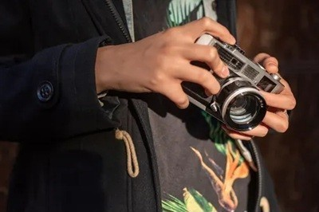

V-Click is the official photography and media club of VIT Pune. It organizes photo exhibitions, workshops, and creative sessions to promote photography and editing skills. It serves as the primary platform for students interested in photography, videography, and video editing, fostering creativity and technical skill development. The club actively participates in campus events, such as the Freshers’ Party 2024, where it captured memorable moments through photography. V-Click promotes an interest in photography as an art form through exhibitions, public events, peer critique sessions, workshops, and competitions to enhance members' skills
